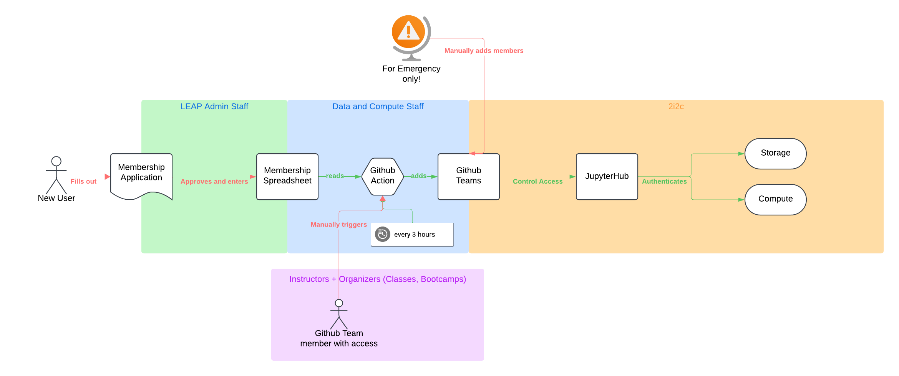

Membership#
Access to LEAP-Pangeo is managed via membership tiers and associated github organization teams.
Code of Conduct#
All users of LEAP-Pangeo must abide by the LEAP Code of Conduct.
Membership Tiers#
The membership tiers are listed in ascending order of access/privileges.
PUBLIC MEMBERSHIP(Please note: Public Membership will be live soon.) Receive weekly LEAP newsletter and invitations to LEAP events. Access to LEAP Pangeo that includes limited performance notebooks, read only access to all LEAP storage, and write access to our scratch bucket, where everything is deleted after 7 days.
EDUCATION MEMBERSHIP Open to participants in LEAP Education programs (e.g., Bootcamp, academic courses, and summer programs). Receive weekly LEAP newsletter and invitations to LEAP events. Access to LEAP Pangeo compute and storage for duration of education program.
RESEARCH MEMBERSHIP Open to researchers who have been referred by a LEAP scientist. Receive weekly LEAP newsletter and invitations to LEAP events. Access to LEAP Pangeo compute and storage for six (6) months (renewal applications may be submitted at the conclusion of six months).
LEAP-FUNDED RESEARCHE MEMBERSHIP. Open to researchers who receive LEAP funding. Receive weekly LEAP newsletter and invitations to LEAP events. Access to LEAP Pangeo compute and storage for duration of time with LEAP.
For more info see the main LEAP website
Administrator and Developer Category#
The LEAP Manager of Data and Computing may grant access to other participants for
the purposes of technical development, debugging, and evaluation of the platform. These members will be added to the leap-pangeo-full-access team to have full access to all resources.
Github Teams and Resources#
The access to the JupyterHub is implemented via Github Teams in the leap-stc GitHub organization. Each Membership tier maps to a single Github Team which determines the resources available to the user.
Tier |
Github Team |
Resources Available |
Membership Valid for |
|---|---|---|---|
PUBLIC |
🚧 |
🚧 |
|
EDUCATION |
Access to storage and computing resource up to 4 cores and 32GB RAM on JupyterHub servers. |
🚧 |
|
RESEARCH |
Access to storage and computing resource up to 16 cores and 128GB RAM on JupyterHub servers + GPU options. |
🚧 |
|
LEAP-FUNDED RESEARCH |
Access to storage and computing resource up to 16 cores and 128GB RAM on JupyterHub servers + GPU options. |
🚧 |
Applying for membership#
To become a LEAP member please use the Application Form.
Once you have applied for membership, it will take a few days until you can be approved. Please watch out for email from LEAP that contains instructions on how to proceed.
Termination of Access#
Users who violate usage policies will have their access suspended pending investigation. The LEAP Director of Data and Computing decides if a policy has been violated and may suspend or terminate access to LEAP-Pangeo at any time.
Offboarding Process#
Users may also be transferred from e.g. the Education Category to the Community Category
when their termed access ends.
Removing a user from the corresponding team is sufficient to disable their access
to those resources.
Removing a user from the leap-pangeo-users group entirely will disable their access
completely.
An automated process will delete user data from the hub one month after a user
is removed from the leap-pangeo-users group.
Member Sign Up Procedure#

All data relevant to LEAP membership is centrally processed in a spreadsheet with access limited to LEAP staff. To allow LEAP members access to the JupyterHub (and the associated storage and compute resources; all managed by 2i2c) the Data and Computation Team maintains a set of Github Actions(the member management repository is private) that parse the relevant data like github usernames and membership expiration, and add users to the appropriate teams. For normal operations users should apply and wait a few days until they are approved, entered, and signed up for access. For urgent situations (like events, classes) that require expedited sign up please refer to Member Sign Up Troubleshooting.